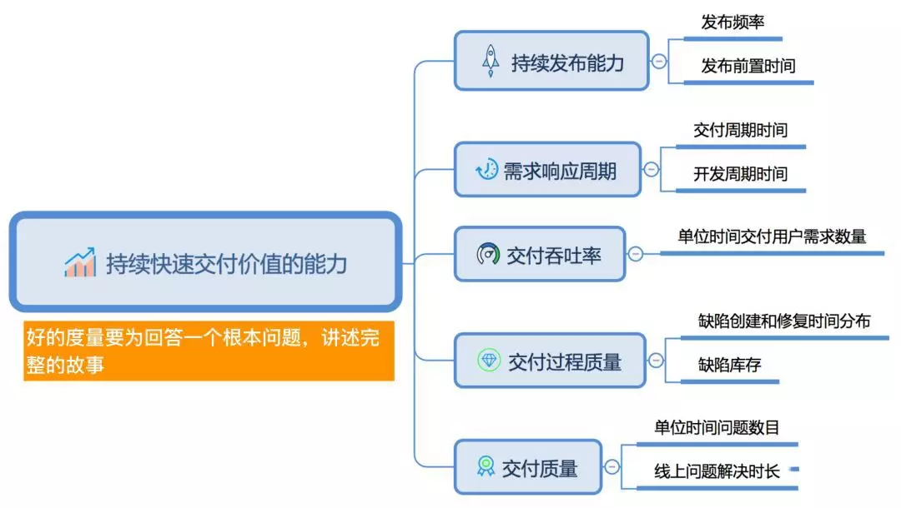
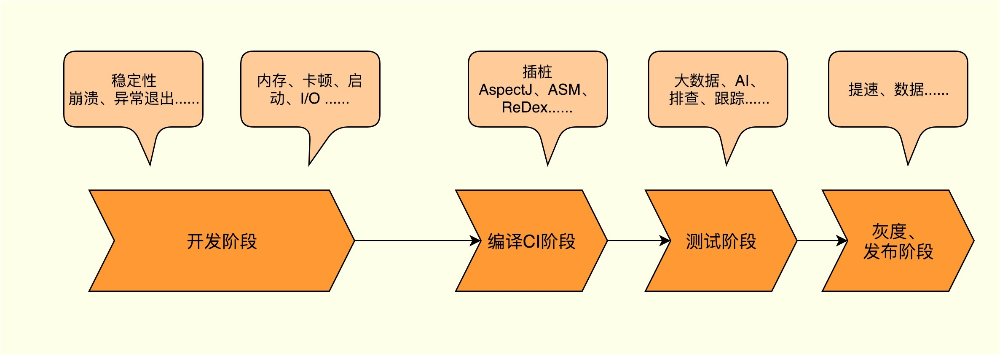

- 00 导读 如何打造高质量的应用？.md
- 00 开篇词 焦虑的移动开发者该如何破局？.md
- 01 崩溃优化（上）：关于“崩溃”那些事儿.md
- 02 崩溃优化（下）：应用崩溃了，你应该如何去分析？.md
- 03 内存优化（上）：4GB内存时代，再谈内存优化.md
- 04 内存优化（下）：内存优化这件事，应该从哪里着手？.md
- 05 卡顿优化（上）：你要掌握的卡顿分析方法.md
- 06 卡顿优化（下）：如何监控应用卡顿？.md
- 06补充篇 卡顿优化：卡顿现场与卡顿分析.md
- 07 启动优化（上）：从启动过程看启动速度优化.md
- 08 启动优化（下）：优化启动速度的进阶方法.md
- 09 I_O优化（上）：开发工程师必备的I_O优化知识.md
- 10 I_O优化（中）：不同I_O方式的使用场景是什么？.md
- 11 I_O优化（下）：如何监控线上I_O操作？.md
- 12 存储优化（上）：常见的数据存储方法有哪些？.md
- 13 存储优化（中）：如何优化数据存储？.md
- 14 存储优化（下）：数据库SQLite的使用和优化.md
- 15 网络优化（上）：移动开发工程师必备的网络优化知识.md
- 16 网络优化（中）：复杂多变的移动网络该如何优化？.md
- 17 网络优化（下）：大数据下网络该如何监控？.md
- 18 耗电优化（上）：从电量优化的演进看耗电分析.md
- 19 耗电优化（下）：耗电的优化方法与线上监控.md
- 20 UI 优化（上）：UI 渲染的几个关键概念.md
- 21 UI 优化（下）：如何优化 UI 渲染？.md
- 22 包体积优化（上）：如何减少安装包大小？.md
- 23 包体积优化（下）：资源优化的进阶实践.md
- 24 想成为Android高手，你需要先搞定这三个问题.md
- 25 如何提升组织与个人的研发效能？.md
- 26 关于编译，你需要了解什么？.md
- 27 编译插桩的三种方法：AspectJ、ASM、ReDex.md
- 28 大数据与AI，如何高效地测试？.md
- 29 从每月到每天，如何给版本发布提速？.md
- 30 数据评估（上）：如何实现高可用的上报组件？.md
- 31 数据评估（下）：什么是大数据平台？.md
- 32 线上疑难问题该如何排查和跟踪？.md
- 33 做一名有高度的移动开发工程师.md
- 34 聊聊重构：优秀的架构都是演进而来的.md
- 35 Native Hook 技术，天使还是魔鬼？.md
- 36 跨平台开发的现状与应用.md
- 37 移动开发新大陆：工作三年半，移动开发转型手游开发.md
- 38 移动开发新大陆：Android音视频开发.md
- 39 移动开发新大陆： 边缘智能计算的趋势.md
- 40 动态化实践，如何选择适合自己的方案？.md
- 41 聊聊Flutter，面对层出不穷的新技术该如何跟进？.md
- 42 Android开发高手课学习心得.md
- Android JVM TI机制详解（内含福利彩蛋）.md
- Android工程师的“面试指南”.md
- Native下如何获取调用栈？.md
- 专栏学得苦？可能你还需要一份配套学习书单.md
- 专栏学得苦？可能是方法没找对.md
- 程序员修炼之路 设计能力的提升途径.md
- 练习Sample跑起来 ASM插桩强化练习.md
- 练习Sample跑起来 唯鹿同学的练习手记 第1辑.md
- 练习Sample跑起来 唯鹿同学的练习手记 第2辑.md
- 练习Sample跑起来 唯鹿同学的练习手记 第3辑.md
- 练习Sample跑起来 热点问题答疑第1期.md
- 练习Sample跑起来 热点问题答疑第2期.md
- 练习Sample跑起来 热点问题答疑第3期.md
- 练习Sample跑起来 热点问题答疑第4期.md
- 结束语 移动开发的今天和明天.md
- 聊聊Framework的学习方法.md
25 如何提升组织与个人的研发效能？
通过“高质量开发”模块的学习，相信你已经对打造一款高质量应用信心满满了。不过人们常说“提质增效”，总喜欢把质量和效率联系在一起，我们都希望在保证质量的前提下，为自己的团队提速。
特别是移动互联网在红海厮杀的今天，快速试错变得越来越重要，敏捷开发也被越来越多的团队所推崇。有些时候为了效率我们甚至愿意牺牲部分性能，而选择在合适的时间去偿还这些“债务”。
在“高质量开发”模块中，我侧重如何给应用交付的每个步骤做好“质检”。今天我们就一起来开启新的征程，从组织和个人研发效能的角度，重新帮你审视整个应用交付的过程。
组织的研发效能
1. 何为研发效能
在讨论如何优化组织研发效能之前，请你先思考一下什么是研发效能。
我们平常开发的过程，是从产品的一个需求想法，转变为功能并且发布上线。这个过程会涉及产品、设计、开发、测试，更多的时候可能还会拉上前端、后台或者算法。
产品的交付涉及很多的流程和人员，虽然设计人员出图很快、我们开发效率很高，但也并不能代表研发效能同样很高，研发效能是对整个产品最终交付的速度和质量负责。在《如何衡量研发效能》一文中，将研发效能定义为一个组织持续快速交付价值的能力。
在文中，作者从流动效率、资源效率和质量进一步拆解了研发效能，并提出了研发效能的五个衡量标准。

对于客户端研发来说，我们是不是只要保证按时按质实现需求就可以了呢？有很多公司，尽管实行“996”，产品、开发和测试看起来的确都很忙了，但是交付速度和质量却仍然不令人满意：产品埋怨开发效率低、开发埋怨产品需求不明确、测试埋怨开发质量差、开发埋怨测试发现不了问题等。
这是因为什么呢？对于研发效能这个话题，虽然我并不是这个领域的专家，但根据我多年的工作经验，我可以谈谈个人的两点思考：
提效是每个人的职责。尽管在BAT这些大厂，会有专门的研发效能部门，但是效能的提升并不是单单只依靠效能部门，或者认为是领导的事情，而是组织里面每一个人都应该去思考的事情。例如天猫设立的效能目标是“211”，也就是2周交付周期、1周开发周期以及1小时发布时长。那团队中的每一个人都应该为这一共同目标而努力，回顾在每个发布迭代中遇到的问题以及改进的建议。
提效不仅限于写Android代码。尽管我们是Android开发工程师，但是我们的工作不应该局限在写Android代码上，关键还是解决需求场景。无论是APM系统、大网络平台、大数据平台，这种大型的前后端一体化解决方案，还是需求流程上或者增强产研测沟通信任的优化。只要是对提升效能有帮助的，我们都可以尝试去实践。在建立了这种整体统筹的思维之后，未来我们想转后端、前端，甚至是产品都会有很大的帮助。
微信在很早的时候就引入了Google的OKR绩效考核制度，记得在2017年Android团队定了“质量”“效能”和“影响力”这三个目标。
接着Android团队的30多个研发也都在围绕这三个目标来制定自己的工作计划，例如针对“效能”来说，有的人抽离一个UI库或者动画库，有的人写一个监控工具，有的人提升编译速度，有的人写一个Web的值班页面，有的人优化需求评审的流程…
这样大家集思广益，一起思考、一起讨论，为达成组织的共同目标而努力，这也是为什么微信开发人员虽然不多，但是战斗力在业界数一数二的原因。
2. 应用交付的流程
前面我从整个组织的角度，定义了研发效能的含义以及衡量它的五个标准。同时也结合我在微信的经历，谈了我关于提升研发效能的两点思考。可能大部分同学还是感觉整个产品的交付流程类似产品、UI设计这些环节是研发人员无法把控的，那接下来我只从研发的流程来看如何提高效能。
正如我在专栏导读《如何打造高质量的应用》所说的，一个应用至少会经过开发、编译CI、测试、灰度和发布这几个阶段。下面我从效能的角度，分别看看每个阶段需要关注什么问题。

开发阶段。开发阶段解决的是如何用尽可能短的时间，完成尽可能多的需求，并且保证开发的质量，不至于后期过多的返工。项目的架构应该如何选择？例如应该采用原生开发，还是Web、React Native、Flutter这样的跨平台方案。如何提升团队人员的能力以及工具和框架的成熟度？有哪些提升团队工作效率的技巧？
编译、CI阶段。编译CI阶段解决的是如何发现和优化开发阶段的一些编码问题，以及快速构建出最终产物。Google的Gradle、Facebook的Buck为编译速度做了哪些努力？Flutter的Hot Reload为什么可以这么快？AspectJ、ASM、ReDex这三种插桩方法的原理和差别是什么？腾讯的RDM、阿里的摩天轮这些编译构建平台有什么特别之处？
测试阶段。测试阶段是为了发现交付过程的质量问题。测试的确不容易，自动化测试成本高，也不容易把控发布质量。那如何可以让测试覆盖更多的场景，Monkey、性能测试、UI测试应该怎么实践？腾讯的RDM、蚂蚁的伙伴是如何做到人人都是测试？网易的Airtest测试框架有哪些过人之处？
灰度、发布阶段。灰度发布是为了验证产品的效果。发布并不是把包丢出去就可以了，我们需要对自己的产品负责。那如何准确、快速地评估产品数据？头条、快手是如何做到精准运营和A/B测试？如果遇到疑难的线上问题应该怎么解决？复杂多变的网络问题又应该怎样去定位和分析？
当然为了提升在这个过程的效率，我们会用到一些很有用的第三方工具，例如用于CodeReview的Gerrit、持续集成的Jenkins、代码审计的Coverity等。
工具不仅可以将大量人工操作变成自动化，也可以方便团队更好的协作。例如我们把需求的流转、进度安排变得可视化，可以大大地减少产研测团队之间消息的隔阂，在这方面阿里的AONE或者腾讯的TPAD都做得非常不错。
项目管理、需求管理、代码托管、构建/部署、测试平台…都是我们常用的工具，类似阿里的云效会提供这样的一站式平台，从需求发起到分支管理、代码review，再到测试发布。在过去，这些工具都是各大公司研发效能部门多年的结晶，一般都不愿意对外提供。但是得益于云时代、TOB时代的到来，现在都愿意打包成商品供我们使用。
当然每个项目都会有自己特殊的情况，这些工具也不一定可以完全符合我们的需要，我们可以根据自己的情况选择合适的服务，或者直接开发自己的工具。
个人的研发效率
个人作为整个组织的一部分，我们效率的提升也会对组织有正向的作用。特别是对某些小团队或者独立开发者来说，个人可能就代表了整个团队。
关于个人效率的提升和时间的管理，有很多书籍专门在讲这个内容。下面从我看到的一些不好的现象，谈谈我个人两个比较深的体会。
1. 思考
年轻人千万不要碰的东西之一，便是能获得短期快感的软件。它们会在不知不觉中偷走你的时间，消磨你的意志力，摧毁你向上的勇气。
随着我们接触到的信息越来越多，越来越多的人很难保持对事情的专注力。工作期间经常想着去刷一下抖音、头条、微信、王者荣耀，强行把时间打破成碎片。
跟产品开了一天的会，他的需求有了，你的代码呢？
可能也有一部分同学他们不刷抖音和头条，但是在上班时间也会被各种邮件、钉钉、会议折磨得痛不欲生。针对这个问题，我的做法是每天上午和下午都会至少保留一个小时“目空一切”的时间，不看邮件、不看钉钉、不接会议。当然有的时候也是无法避免被老板当面拉回到“现实”。
我经常看到团队里面的一些人也存在这种现象，最终表现可能是这个人经常“996”，看起来很忙，但是产出并不高，而且个人成长也不明显。
每天我们应该需要有一段时间真正的静下心来工作，而且每过一段时间也要重新审视一下自己的工作，有哪些地方做的不够好？有没有什么事情是自己或者团队的人正在反复而低效在做的，是否可以优化。
2. 方法
关于方法，这里我只说两点，也是同学们经常会出现的问题。
做事的方法。曾经看到一些开发人员，非常喜欢用二分法来排查问题。当测试给他报Bug时，他会非常熟练的操作Git命令，花上一两个小时打出几十个验证包，不辞劳苦地尝试。当然二分法我也使用过，在毫无头绪的时候的确可以“死马当活马医”。但是我们在使用这个“大杀器”之前，起码应该经过自己的思考，尝试正面去迎击Bug本身。
提问的方法。在微信和QQ群里面，经常会看到有些同学在群里问一个问题，可能Google一下就可以得到答案。然后他们在群里灌了一个小时水，最后还是没有任何答案。在做Tinker开源的时候，我有时也被一些使用者问得心情不再愉悦。事实上提问题是非常体现技术和职业素养的，我们在提问题之前需要经过自己的思考和努力，在这里推荐你看看《提问的艺术》。
总结
“吾日三省吾身”，无论是组织的研发效能，还是个人的工作效率，我们都需要学会经常去回顾和思考，快速演进、快速迭代，争取未来做得更好。
你在工作和学习的效率上，遇到过哪些问题？对于如何提升工作和学习的效率，你还有什么好的方法和建议吗？欢迎留言分享给我和其他同学。
欢迎你点击“请朋友读”，把今天的内容分享给好友，邀请他一起学习。我也为认真思考、积极分享的同学准备了丰厚的“学习加油礼包”，期待与你一起切磋进步哦。
© 2019 - 2023 Liangliang Lee. Powered by gin and hexo-theme-book.